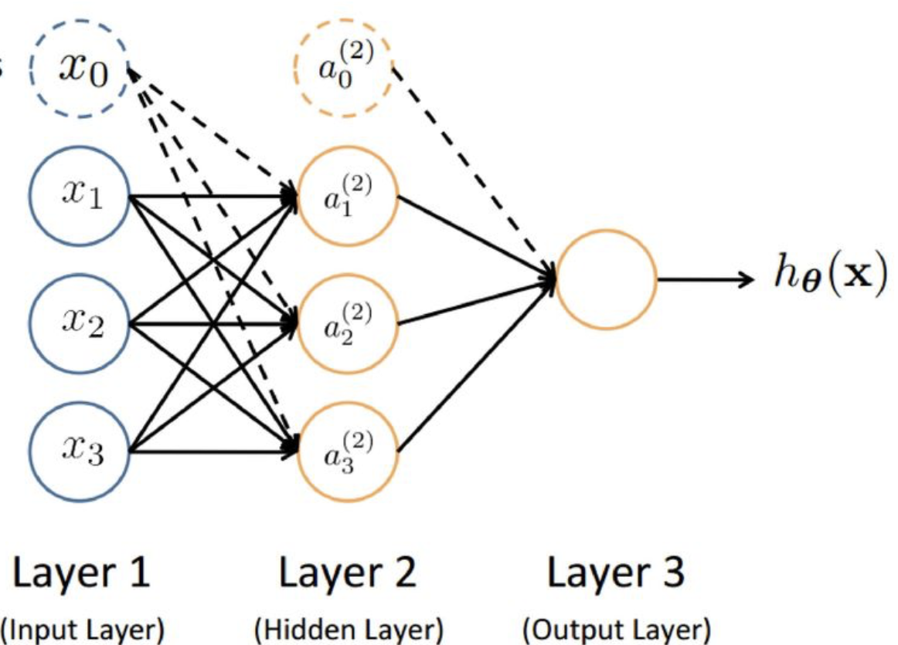

Chapter 10 Live Lab: Neural Networks
This browser lab keeps the network deliberately small. It illustrates function approximation without requiring a local R installation or a GPU.

1 A sigmoid approximation to a binary maximum
For binary inputs, \(\max\{x_1,x_2\}\) is the logical OR function.
The coefficients are not estimated here; they are chosen to show how a smooth sigmoid can approximate a threshold-like function.
2 Learn a nonlinear conditional mean
The true regression function is \(m(W_1,W_2)=\sin(\pi W_1)+W_2^2\). We compare a small one-hidden-layer network with a misspecified additive linear model on held-out observations.
3 Inspect predictions along one slice
This exercise evaluates prediction. A flexible predictor becomes a causal tool only when it is embedded in a credible identification strategy.